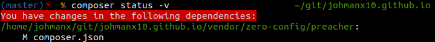

Developing in vendor directories
In a recent version og PhpStorm, the IDE automatically excludes folders that are stored under the Composer vendor directory.
Whether it is because of something PhpStorm does, or happens because of an installed Composer plugin, is besides the point.
As a result of this, a conversation sparked up about whether one should develop files that are stored in the vendor directory.
Misconceptions about the vendor directory
One should not edit files under vendor.
Editing vendor packages is debatable. There are some things you should be aware of and set up, before starting to edit vendor packages. If you rock a default Composer configuration, I would say editing vendor packages is indeed a bad practice.
If you change anything inside the vendor directory, your next
composer updatewill write over your changes.
This points out a misconception caused by the default behavior of Composer, due to its default configuration.
When not to edit files in a vendor directory
If you use the default configuration of Composer, it will have a preferred
installation strategy for all packages set to auto.
It turns out a lot of developers are unaware that Composer is able to install
packages with strategies that do not use dist packages, like .zip and .tar
artifacts.
By default all packages are installed through the auto strategy. This strategy
will attempt to install a dist package, if available, and fall back to the source.
In most cases, this is a clone of your VCS repository, like GIT.
When packages are installed as a dist package, you should not edit the files in its resulting vendor directory, because a new composer update or install will override all your edits.
When to edit files in a vendor directory
Editing files in vendor packages is useful when patching bugs or writing new features for modules / plugins / extensions / bundles of an application project that has separated its components into multiple Composer packages.
Whenever your package is installed using the source strategy, you are good to
go on editing files in your vendor directory. When a package is installed as
such, assuming your source is a GIT repository, it will do a git clone to
install your package. This means you have a full GIT repository locally and you
can commit and push changes you make.
Now, if you do a composer update, Composer will check if there are unpushed
changes. If it detects any, it will ask you to break off the install / update,
stash changes, remove the package and gives some more options.
On top of this, the command composer status -v becomes relevant and useful.
This command is able to show you, for every vendor package, if it holds any
changes that have not been pushed yet.
When I alter composer.json in the zero-config/preacher package for my website,
the following is shown by composer status -v:

Setting up a preferred installation strategy
Let's assume we work for the company ACME inc. and they use Symfony a lot, for
which we are an active contributor. We want to install packages from acme/* and
symfony/* as source and all other packages should install as dist, or fall
back to source when the dist is unavailable.
This can be achieved by putting the following in your global Composer configuration:
{
"config": {
"preferred-install": {
"acme/*": "source",
"symfony/*": "source",
"*": "auto"
}
}
}The order in which these package patterns are supplied matters.
Note: Order matters. More specific patterns should be earlier than more relaxed patterns. When mixing the string notation with the hash configuration in global and package configurations the string notation is translated to a
*package pattern.
See the official documentation for more information on configuring the preferred installation strategy.
Look for the config.json file in your composer home, or create it if it's missing.
The following shows you where your global composer home is located.
composer global config homeContinually developing a vendor package
When you, and possibly co-workers, are developing a new feature, you don't want to be constantly confronted with conflicts during composer updates. In order to develop a new feature for a vendor package, I suggest the following:
- Increase the version constraint of your package by 1 minor version
- Add a
dev-constraint for the same package underrequire-devwith a version alias for the new version constraint.
Before:
{
"require": {
"acme/powder-factory": "^1.0"
}
}After:
{
"require": {
"acme/powder-factory": "^1.1"
},
"require-dev": {
"acme/powder-factory": "dev-feature/ACME-1 as 1.1.0"
}
}When running composer install --no-dev, it will do a normal production
installation using the constraints in require. Currently, the version 1.1.0
is still under development, so it would not be able to install your package until
this new version is released.
When running composer install without the --no-dev option, it will install
the package using the branch feature/ACME-1. The dev- prefix simply tells
Composer it has to look for a branch. This constraint is followed by the alias,
as 1.1.0. This tells Composer to interpret the contents of our branch as if it
were released as version 1.1.0, which makes it conform to the version
constraint put in the require section. This is a necessary part, if you have
your minimum-stability set to stable.
With the version constraints set up as done above, every composer update will
look for a new commit in the repository of that package. Whenever a new commit is
available, it will install this commit. If there are local changes, Composer will
ask what to do with these changes. This ensures you don't lose changes you made
between composer update calls.
Conclusion
Changing files under vendor can be done, if your workflow takes into account
some small rules. With the default Composer configuration, it is ill advised to
modify vendor packages.
Read more on setting up proper
version constraints and
preferred-install
configurations.